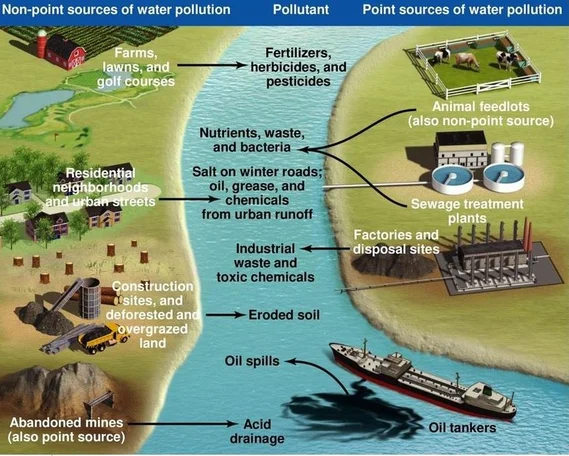

What is Stream Saviour?
Water is essential component which plays a vital role in our life.
But nowadays these are being polluted by various factors like heavy usage of automobiles, plastic wastage
Water Quality Index is important aspects to human existence and to measure the quality of water requires processing long-term trends and analyzing them.
Stream Saviour - is one such platform where you can find the Water Quality Index of the river in your area at certain time.
Waters Are In Danger!
